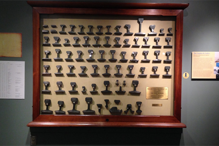

Innovation in NJ
The T-Trail

What was the reason for the railings being shaped in a T shape?
It was the easiest shape to make
T for train
It connected to each piece the best
It improved wheel traction and easier to attach
Submit Answer